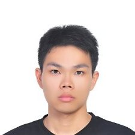

我愛好程式設計, 擅長 Python 程式語言, 熟悉 Unix-like 環境, 喜歡科技新知.
在交通大學資訊技術服務中心 (計算機中心) 擔任系統管理與開發 3 年半, 期間考上並修完在職專班的課程, 開始參與社群活動.
我想找一份專注于軟體開發的工作, 累積更多開發經驗.
- 專長
- Python programming language
- Django Content Management Framework
- FreeBSD / Linux distro 系統管理
- VMware vSphere 虛擬環境管理
- ISO 27001 / 20000 資安與管理稽核員資格
- 學歷
- 政治大學應用數學系畢.
- 交通大學資訊工程所 (在職專班, 尚未畢業).
- 經歷
-
於交通大學任職2010~2013
- 負責教職員郵件系統, 學生郵件系統, VPS 虛擬主機服務, Unix 伺服器服務.
範圍涵括系統維運, 系統改進, 與客服.
- 以 FreeBSD 系統重建 Unix 伺服器服務, 撤換老舊的 Solaris 系統, 並移轉資料.
- 將學生郵件系統全面虛擬化.
- 以 Python + Thunderbird 開發校內公告信系統.
開源軟體開發2013~2014
- 採用 Django Content Management Framework 設計交大花友會洄瀾週訂購網站.
- 為 FreeBSD 開發 OpenStack guest addition 並開源, 名為 bsdcloudinit.
功能與程式碼尚在追加改進中.
社群活動2009~2014
- 嗜好
閒暇常看新資訊新技術新研究, 偶爾會挑程式設計題目練習 (Eg: CheckIO) ;
工作之餘會參加社群活動, 以增加技術交流的機會.
- 個人特質
- 對很多五花八門的議題都有興趣. 例如武術, 歷史, 語文, 國際時事 等等. 我也很喜歡結交博學多聞的朋友.
- 注重生活品質, 但時常沒把心思放在金錢方面. 生活態度與金錢觀都較單純.
- 與他人討論有興趣的議題時會特別熱情 (或激動) .
- 在乎團隊合作. 當團隊中意見有衝突時, 願意退一步讓事情得以進展.
- 非常不喜歡與說話顛三倒四無邏輯的人交談. 不過因在上一份工作擔任過客服, 因此仍有足夠能力面對與處理.
- 工作目標
在交大資工修業期間, 我接觸過分散式系統, 資料庫, 無線網路等課程.
雖然從課程中建立了一些基本觀念, 然而實務經驗卻全然空白.
藉由工作, 我希望能建立實務經驗, 並檢驗比較書上所學之應用.
在軟體開發方面, 雖然有著墨 functional programming, continuous integration 等提升生產品質的技術,
但我協同工作的實務經驗仍嫌不足. 希望能在工作上獲得合作機會與技術交流, 讓所學能更具體發揮.
- 自我期許
目前我於交大的課程已修完, 因此我希望在接下來的一年專心於工作, 日後再補足研究所畢業所需論文.
下班後若有餘力, 我會去參加社群增加技術交流的機會. 我目前單身沒有對象, 因此有更充裕的空間去認識更多人.
除此之外, 我有一些有興趣的開源項目想推動/參與. 待能掌握工作後, 希望能藉由工作所吸收的開發經驗應用在開源項目中.